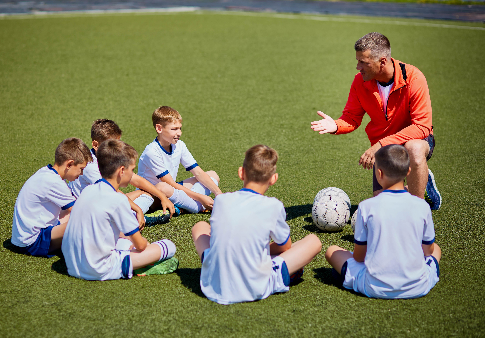

William Hawkings
“Set your goals high, and don’t stop til you get there”
Published on

As a football coach, I have the privilege of working with talented athletes every day, helping them to develop their skills and reach their full potential on the field. It's a demanding profession, but also one of the most rewarding experiences I have ever had.
I have been coaching for over a decade now, and I have seen firsthand the transformative power of the sport. Football teaches important life skills, such as discipline, teamwork, perseverance, and communication. It also fosters a sense of community and camaraderie among players, coaches, and fans alike.
As a coach, my job is to guide and mentor my players, to help them grow both as individuals and as a team. I believe that every player has the potential to be great, and it's my job to unlock that potential and help them become the best versions of themselves.
My coaching philosophy is rooted in the principles of respect, hard work, and determination. I believe that success is earned through effort and dedication, and that every player has the ability to achieve their goals if they are willing to put in the work.
One of the most rewarding aspects of my job is seeing my players succeed on the field, and knowing that I played a role in helping them get there. Whether it's a well-executed play, a hard-fought victory, or a personal achievement, every success story is a reminder of why I love this sport and why I am proud to be a football coach.